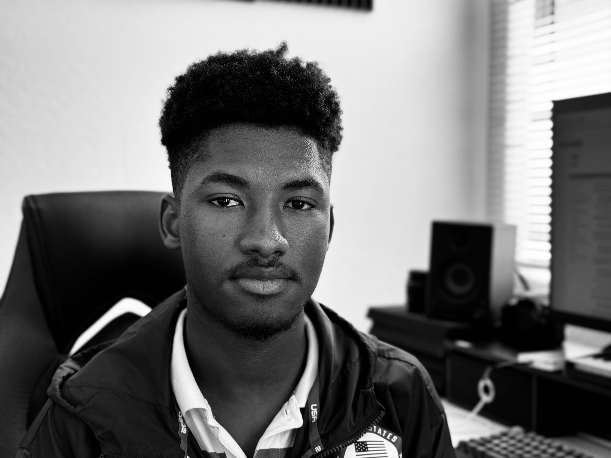
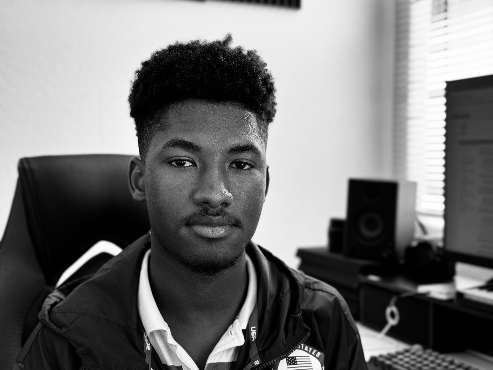
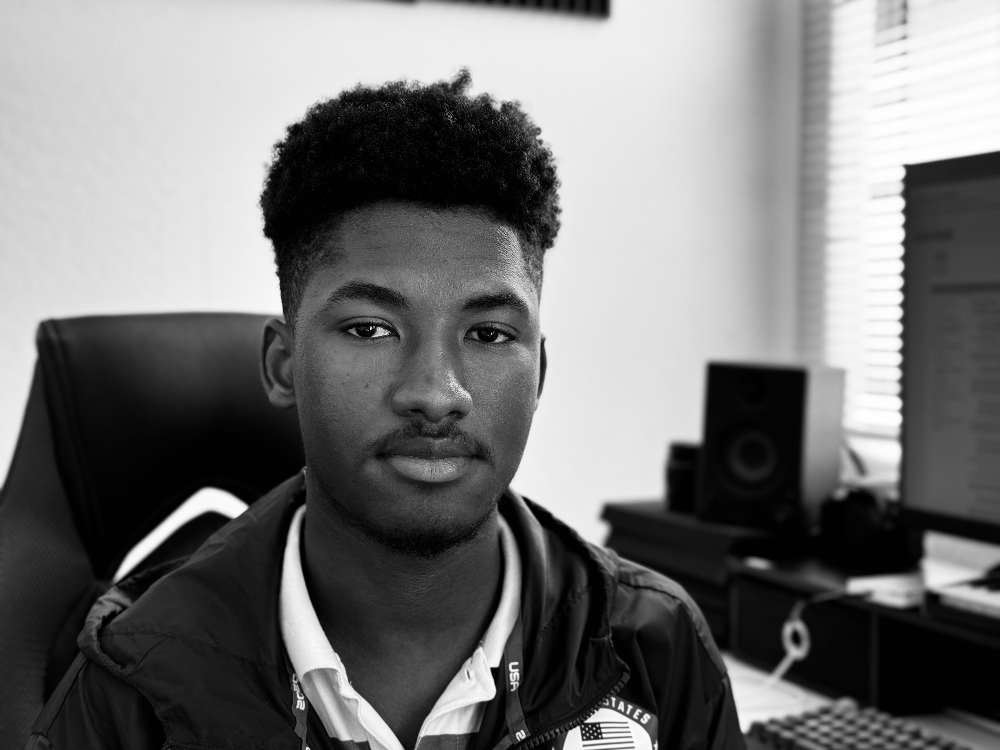
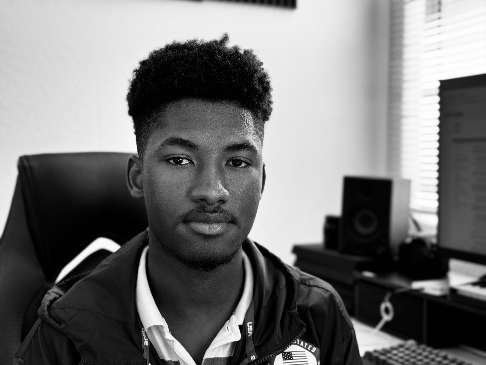

Hasmieu Jalloh

Hasmieu Jalloh

Hasmieu Jalloh

Hasmieu Jalloh

As you can see, I'm not the best designer in the world (keep that in mind).
My name is Hasmieu Jalloh (pronounced Has-Me-You) but I'm not your AVERAGE guy, that's a TYPICAL saying I would agree. If you didn't laugh you are a MEAN one. I spent about the first ten (10) years of my life in Liberia where I developed my love for electronics and would supply electricity to my house and a neighbouring house
I later moved to Sierra Leone and was hornored to be raised by different relatives and I learnt to read and memorize the Holy Qur'an there (a portion of the Qur'an, I still read it for understanding rather than memorization). I attented Junior Secondary School (JSS) to Senior Secondary School (SSS) in Sierra Leone until I moved to the United States where I ended up repeating three grades anyway. Thank God my genes compensated my age (people always thought I was younger than my actual age). I developed love for computer programming around 15 (But I think I started early on with electronics, that was my programming). Most people say that I speak softly and I'm calm, here's the truth, I stutter. Inorder to go a day (in school) without getting bully for my stutter, I started speaking slowly and calmly, I stopped mingling all together. So I developed love for books and learning quietly (but at a rapid speed), I just can't communicate my ideas because I stutter-I try to speak now though, but with a severe stutter- Stuttering (at least for me) is a blessing, there were times when I wanted to say some wild stuffs and words that I wouldn't be able to take back, but I just couldn't speak. Thanks Stutter (this isn't sarcasm). I will be entering college this year (2024), and I'm eighteen (18) years old. Yep (remember I said I repeated three whole grades?), well I would have been a junior in college at eighteen (18) if I hadn't repeated those grades.